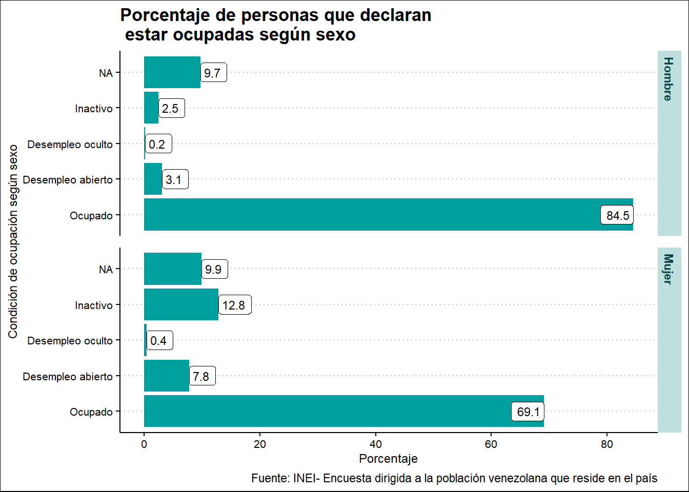

Capítulo 4 Inserción laboral de la población venezolana en el Perú: Una aproximación a la data
Leanna Sofía de los Ángeles Zúñiga Montaño
4.1 Introducción
Hablar sobre la población venezolana en el Perú, implica abordar un tema relevante a nivel internacional y nacional: la migración. Según la Organización Internacional para las Migraciones de la Organización de las Naciones Unidas (OIM-ONU), la migración es el “movimiento de personas fuera de su lugar de residencia habitual, ya sea a través de una frontera internacional o dentro de un país.” No obstante, también advierte que no hay definiciones universales acordadas, por lo que expone una serie de definiciones dependiendo el tipo de migración (Organización Internacional para las Migraciones, 2019:124).
Para Koechlin, Vega y Solórzano (2018) quienes migran no necesariamente lo hacen guiados por proyectos migratorios sino por “terribles situaciones económicas, de crisis y de dictaduras políticas.” Así, se desarrollan desplazamientos violentos que podrían encontrar destinos donde también se constituyen situaciones violentas.
De acuerdo al informe sobre las migraciones en el mundo 2020, la OIM manifiesta que en el 2019 había 272 millones de migrantes internacionales en el mundo; lo que equivale al 3,5% de la población mundial. En relación con esto, también informa que en el 2018 la República Bolivariana de venezuela fue el principal país de origen de solicitudes de asilo; y en el 2019, alrededor de 4 millones de venezolanos habían abandonado el país.
Por su parte, el Observatorio Iberoamericano sobre Movilidad (OBIMID) de la Universidad de Comillas de España y a la Universidad Antonio Ruiz de Montoya de Perú, estimó que en noviembre del 2020 5,4 millones de venezolanos salieron del país y que, de acuerdo a data recopilada para su investigación “Inserción Laboral de la migración venezolana en Latinoamérica” que el 89% de la población migrante está asentada en Sudamérica y un 71% en el área andina (Koechlin, J. ; Solórzano, X.; Larco, G. ; Fernández-Maldonado. E. 2021:13)
Al respecto, literatura especializada en migración venezolana sostiene que en el 2016 Venezuela ya atravesaba una crisis humanitaria compleja debido a las amenazas en la sobrevivencia de la población.(Koechlin, J. ; Solórzano, X.; Larco, G. ; Fernández-Maldonado. E. 2021: 8) Los estudios también indican que los factores que vienen motivando la migracion venezolana están vinculados con la crisis económica, la violencia social y política y la demolición de las instituciones encargadas de garantizar el respeto de los derechos humanos y la institucionalidad (Koechlin, J. ; Vega, E.; Solórzano, X. 2018:56).
A razón de ello, el estudio denominado “El éxodo venezolano: entre el exilio y la emigración,” sostiene que para el caso peruano, la persona que migró vino principalmente por urgencias económicas y tratando de mejorar su calidad de vida a través del trabajo, satisfacer condiciones de supervivencia como alimentación y salud y el de sus familiares en Venezuela (Koechlin, J. ; Vega, E.; Solórzano, X. 2018:65). En ese sentido, busca emplearse bajo cualquier condición laboral que genere ingresos.
En este punto, resulta necesario mencionar que el Perú ha pasado de ser solo un destino de tránsito para convertirse en un país que brinde posibilidades de desarrollo para esta comunidad. Ello viene representando un desafío para el Estado peruano según la literatura especializada, puesto que en términos de institucionaidad migratoria no se cuenta con respuestas coordinadas ni información migratoria clara. Adicional a ello, se identifica que tampoco se ha logrado diseñar una política integral de inclusión (Koechlin, J. ; Vega, E.; Solórzano, X. 2018:90)
Considerando lo antes expuesto, nos resulta interesante explorar ¿Cómo se viene desarrollando la inserción laboral de la población venezolana en el Perú. Para ello, exploramos qué tipo de información estadística se había generado desde el Estado u otros espacios con la finalidad de emplearla como material principal para la obtención de resultados.
De acuerdo a la búsqueda, identificamos como una de las funetes principales con información estadística disponible de manera pública para ser empleada en el software R era la base de datos de la Encuesta dirigida a la población venezolana que reside en el país, elaborada el 2018 por el Instituto Nacional de Estadística e Informática (INEI). Por ello, el presente proyecto tomará como base los resultados obtenidos del análisis a la base de datos de la mencionada encuesta y como insumos las estadísticas presentadas en informes relevantes sobre la inserción laboral venezolana en el Perú.
4.2 Paquetes usados
Con el objetivo de emplear bases de datos, se utilizaron dos paquetes: haven y la colección de paquetes tidyverse. El primer paquete permite la lectura de data que contiene archivos con extensión .sav, que pertenecen al formato SPSS Statistics; mientras que el tercer paquete nos permite desarrollar una limpieza de datos, además de ejecutar funciones que ayudan con la organización, el filtrado y la selección de variables relevantes. Otro aporte de este tercer paquete es que permite presentar la información extraída de la data a través de gráficos que pueden ser creados con la función ggplot.
4.3 Conjuntos de datos usados
4.3.1 Lectura de datos
Este proyecto empleó la base de datos de la “Encuesta dirigida a la población venezolana que reside en el país” elaborada por el Instituto de Estadística e Informática (INEI) y que se encuentra disponible para descarga en el enlace http://iinei.inei.gob.pe/microdatos/.
De acuerdo a la ficha técnica de la encuesta (2018),entre los objetivos se encuentra el “obtener información confiable sobre las tendencias, características, vulnerabilidades, capacidades y necesidades de protección de la población venezolana refugiada y migrante en el Perú. No obstante, resulta necesario indicar que la cobertura de la encuesta fue el ámbito urbano de las capitales de los departamento Tumbes, La Libertad, Arequipa, Cusco, Lima Metropolitana y la Provincia constitucional del Callao. Al respecto, debemos entender que la información que de ella devenga o sus resultados no son necesariamente representativos de la comunidad venezolana refugiada y migrante en el Perú.
A continuación se realizará una descripción de los conjuntos de datos ejecutados en relación a las preguntas planteadas:
Sobre esta encuesta, se usará principalmente variables del Capítulo 600, que brindan información sobre empleo a través de veintiocho (28) preguntas. Asimismo, a fin de poder dar respuesta a las preguntas secundarias, también se usarán el Capítulo 200, que presenta información sobre caracteristicas de los residentes del hogar y el Capítulo 500, que contiene información sobre orientación sexual y educación
En ese sentido, iniciamos con la revisión de la base de datos para identidicar qué módulos serán utilizados, de acuerdo a los capítulos de interés. Posterior a ello, realizamos la descarga, guardado de los módulos de interés y la lectura de los mismos a través de la función read_sav().
A partir de la lectura de los módulos de la base de datos y la obtención del valor de las etiquetas, procedimos a explorar la data e identificar la información más relevante en consonancia con el tema central. Al respecto, identificamos nuestras variables principales:
- Sobre características de los residentes del hogar: CONGLOMERADO, VIVIENDA, HOGAR, CODPERSO. Estas variables permiten identificar a la persona encuestada. Adicional a ellas, también se empleó la P205_A que responde a la pregunta ¿qué edad tiene en años cumplidos? y la P204 vinculada al sexo de la persona.
- Sobre orientación sexual: P513, que responde a la pregunta “De acuerdo a su orientación sexual ¿usted actualmente se considera?: Heterosexual, gay, lesbiana. bisexual, pansexual, asexual, otro, no sabe”
- Sobre educación: P501, vinculada a la pregunta ¿Cuál es el último nivel de estudios que aprobó?
- Sobre empleo: OCU600A, que brinda información sobre la condición de actividad de las personas de 14 a más años. También se empleó la variable P609 y P610_T, que permiten identificar si la persona cuenta con algún contrato laboral o comprobante de servicios y el total de horas trabajadas en todas las ocupaciones declaradas, respectivamente.
Las variables identificadas permitirán responder a las siguientes preguntas:
Pregunta central
- ¿Cómo se viene desarrollando la inserción laboral de la población venezolana en el Perú?
Preguntas secundarias
¿Cuáles son las características de las personas venezolanas que declaran estar trabajando?
¿Cuál es el nivel educativo que prevalece entre la población venezolana que migró al Perú que declara estar trabajando?
¿Cuáles son las condiciones laborales de las personas que declaran estar trabajando? (Identificar si tienen contrato o están en condición de trabajo informal, )
¿Cuál es la relación entre el nivel educativo y la condición de formalidad de las personas que declaran estar trabajando?
4.3.2 Limpieza y ordenamiento de datos
En esta sección se presentan los códigos empleados para la obtención de la data que será usada en el análisis de resultados. La data obtenida se encuentra en recuentos y porcentajes.
4.3.2.1 Características de las personas que declaran estar trabajando
Los siguientes bloques de códigos me permiten identificar tres características de las personas que declararon tener alguna ocupación. Al respecto, el primer bloque de códigos ayuda a identificar la relación entre las variables trabajo y edad. Esta información se almacena en el objeto denominado trabajo_edad.
trabajo_edad <- trabajo_venezuela %>%
left_join(Caracteristicas_venezuela) %>%
select(CONGLOMERADO, VIVIENDA, HOGAR, CODPERSO, OCU600A, P205_A, FACTOR_DE_EXPANSION) %>%
mutate(grupo_etareo = case_when(
P205_A < 18 ~ "Menor a 18",
P205_A < 25 ~ "De 18 a 25",
P205_A < 50 ~ "De 25 a 50",
TRUE ~ "De 50 a más"
)) %>%
group_by(grupo_etareo, OCU600A) %>%
summarise(recuento = sum(FACTOR_DE_EXPANSION)) %>%
mutate(porcentaje = recuento/sum(recuento)*100) %>%
ungroup()El segundo bloque permite conocer la relación entre las variables trabajo y sexo. Los resultados se encuentran en el objeto denominado trabajo_sexo.
trabajo_sexo <- trabajo_venezuela %>%
left_join(Caracteristicas_venezuela) %>%
select(CONGLOMERADO, VIVIENDA, HOGAR, CODPERSO, OCU600A, P204, FACTOR_DE_EXPANSION) %>%
group_by(P204, OCU600A) %>%
summarise(recuento = sum(FACTOR_DE_EXPANSION)) %>%
mutate(porcentaje = recuento/sum(recuento)*100) %>%
ungroup()Finalmente, el tercer bloque de códigos es usado para identificar la relación entre las variables trabajo y orientación sexual. Los resultados se encuentran en el objeto denominado trabajo_orientación.
trabajo_orientación <- trabajo_venezuela %>%
left_join(orientacion_venezuela) %>%
select(CONGLOMERADO, VIVIENDA, HOGAR, CODPERSO, OCU600A, P513, FACTOR_DE_EXPANSION) %>%
mutate(orientacion = case_when(
P513 == "Heterosexual?" ~ "Heterosexual",
P513 %in% c("Lesbiana?", "Gay?", "Bisexual?", "Pansexual?", "Asexual?", "oTRO?") ~ "No heterosexual",
TRUE ~ "No sabe/No contestas"
)) %>%
group_by(orientacion, OCU600A) %>%
summarise(recuento = sum(FACTOR_DE_EXPANSION)) %>%
mutate(porcentaje = recuento/sum(recuento)*100) %>%
ungroup()
4.3.2.2 Nivel educativo de las personas que declaran estar trabajando
El siguiente bloque de códigos permiten identificar cuál es el nivel educactivo que prevalece en la población venezolana refugiada y migrante, que declaró tener una ocupación. Los resultados obtenidos se encuentran en la dataframe: trabajo_prev.educ.
trabajo_prev.educ <- trabajo_venezuela %>%
left_join(orientacion_venezuela) %>%
select(CONGLOMERADO, VIVIENDA, HOGAR, CODPERSO, OCU600A, P501, FACTOR_DE_EXPANSION) %>%
group_by(OCU600A, P501) %>%
summarise(recuento = sum(FACTOR_DE_EXPANSION)) %>%
mutate(porcentaje = recuento/sum(recuento)*100) %>%
ungroup() 4.3.2.3 Condiciones laborales de las personas que declaran estar trabajando
Para fines del trabajo, también nos propusimos extraer información en relación a las condiciones laborales de las personas venezolanas que declararon tener una ocupación. Al respecto, se empleó la variable P610_10, que brinda información sobre las horas de trabajo. Los resultados obtenidos fueron guardados en el objeto trabajo_horas.
trabajo_horas <- trabajo_venezuela %>%
filter(OCU600A == "Ocupado") %>%
select(CONGLOMERADO, VIVIENDA, HOGAR, CODPERSO, OCU600A, P610_T, FACTOR_DE_EXPANSION) %>%
mutate(horas_de_trabajo = case_when(
P610_T == 0 ~ "No trabajó",
P610_T < 24 ~ "Menor a 24",
P610_T < 48 ~ "De 24 a 48",
P610_T < 60 ~ "De 48 a 60",
is.na(P610_T) ~ "Sin información",
TRUE ~ "De 60 a más")) %>%
group_by(OCU600A, horas_de_trabajo) %>%
summarise(recuento = sum(FACTOR_DE_EXPANSION)) %>%
mutate(porcentaje = recuento/sum(recuento)*100) %>%
ungroup()4.3.2.4 Relación entre el nivel educativo y la condición de formalidad de las personas que declaran estar trabajando.
Finalmente, resultó relevante explorar la relación entre las variables nivel educativo y condición de formalidad de aquellas personas que indicaron tener una ocupación. Para ello, se usaron las variales OCU600A, P609 y P501. La información obtenida fue registradas en el objeto niv.educ_formalidad.
niv.educ_formalidad <- trabajo_venezuela %>%
left_join(orientacion_venezuela) %>%
select(CONGLOMERADO, VIVIENDA, HOGAR, CODPERSO, OCU600A, P609, P501, FACTOR_DE_EXPANSION) %>%
filter(OCU600A == "Ocupado", !is.na(P609)) %>%
group_by(P501, P609) %>%
summarise(recuento = sum(FACTOR_DE_EXPANSION)) %>%
mutate(porcentaje = recuento/sum(recuento)*100) %>%
ungroup() %>%
filter(P609== "No")4.4 Resultados
4.4.1 Perfil de las personas venezolanas en condición de ocupación
De acuerdo a la encuesta dirigiga a la población venezolana que reside en el Perú en el año 2018, la estructura poblacional venezolana se concentraba en el grupo etáreo de 18 a 29 años con un 42.0%. Asimismo, indica que del total de personas encuestadas el 93,5% se encuentra ocupado y el 6,5 desempleado.
Al respecto, empleando un bloque de códigos podemos graficar a través de una barra de datos, el porcentaje de personas que declaran estar ocupadas según grupo etáreo.
trabajo_edad %>%
ggplot(aes(porcentaje, OCU600A)) +
geom_col() +
facet_grid(rows = "grupo_etareo")+
geom_label(aes(label = round(porcentaje, 1)))+
labs(title = "Porcentaje de personas que declaran \n estar ocupadas según grupo etáreo",
caption = "Fuente: INEI- Encuesta dirigida a la población venezolana que reside en el país") +
labs(x = "Porcentaje",
y = "Condición de ocupación")De acuerdo al gráfico podemos identificar que del total de personas que declararon estar ocupadas el 89.3% se ubica en el grupo etáreo de 25 a 50 años, seguido de un 87% que se ubica en el rango de 18 a 25 años.
trabajo_sexo %>%
ggplot(aes(porcentaje, OCU600A)) +
geom_col() +
facet_grid(rows = "P204")+
geom_label(aes(label = round(porcentaje, 1)))+
labs(title = "Porcentaje de personas que declaran \n estar ocupadas según sexo",
caption = "Fuente: INEI- Encuesta dirigida a la población venezolana que reside en el país") +
labs(x = "Porcentaje",
y = "Condición de ocupación según sexo") Asimismo, de acuerdo a la información brindada por la población encuestada, el mayor porcentaje de personas ocupadas son hombres con un 84.5%; mientras que el mayor porcentaje de personas inactivas son mujeres con un 12.8%.
En línea con lo anterior, para seguir identificando otra características más del grupo de personas que declaran estar ocupadas, a continuación ejecutamos un bloque de códigos que nos permite obtener un gráfico de barras a partir del cruce de las varibles OCU600A y P513, que brinda información sobre la orientación sexual. Al respecto, debido a los resultaydos de la variable P513 se procedió a recategorizarla; así, la información se ordenará en los grupos “Heterosexual,” “No heterosexual” y “No sabe/No contesta.”
trabajo_orientación %>%
ggplot(aes(porcentaje, OCU600A)) +
geom_col() +
facet_grid(rows = "orientacion")+
geom_label(aes(label = round(porcentaje, 1)))+
labs(title = "Porcentaje de personas que declaran \n estar ocupadas según orientación sexual",
caption = "Fuente: INEI- Encuesta dirigida a la población venezolana que reside en el país") +
labs(x = "Porcentaje",
y = "Condición de ocupación")En función al gráfico, podemos observar que del total de personas encuestadas, los porcentajes se dividen de manera igual entre el grupo que declara ser “Heterosexual” y “No heterosexual” con un 85.6%. ** Pasar esta explicación a la sección de resultados** Explicación: Los datos no son muy representativos en el grupo “No heterosexual” en las respuestas obtenidas.
4.4.2 Nivel educativo las personas venezolanas en condición de ocupación
Para fines de esta investigación, también ha sido importante conocer el nivel educativo que prevalece entre la población venezolana que migró al Perú y que declara estar ocupada.
En ese sentido, el siguiente gráfico ayuda a identificar porcentualmente cuáles son los niveles educativos que prevalecen por condición de ocupación.
trabajo_prev.educ %>%
ggplot(aes(porcentaje, OCU600A)) +
geom_col() +
facet_grid(rows = "P501")+
geom_label(aes(label = round(porcentaje, 1)))+
labs(title = "Prevalencia del nivel educativo \n según condición de ocupación",
caption = "Fuente: INEI- Encuesta dirigida a la población venezolana que reside en el país") +
labs(x = "Porcentaje",
y = "Condición de ocupación por nivel educativo")El gráfico nos muestra que del total de las personas encuestadas que indicaron estar ocupadas, el 25% cuenta con estudios de Educación Superior Universitaria completa seguido de un 16.07% con estudios técnicos superior completo.
Junto a la información anterior, también es importante conocer la prevalencia del rango de horas de trabajo. Para ello, se ejecutó el siguiente bloque de códigos.
trabajo_horas %>%
ggplot(aes(porcentaje, OCU600A)) +
geom_col() +
facet_grid(rows = "horas_de_trabajo")+
geom_label(aes(label = round(porcentaje, 1)))+
labs(title = "Prevalencia del rango de horas de trabajo ",
caption = "Fuente: INEI- Encuesta dirigida a la población venezolana que reside en el país") +
labs(x = "Porcentaje",
y = "Rango de horas de trabajo")El gráfico nos muestra que del total de las personas que indicaron estar ocupadas, la mayoría (57.3%) declaró trabajar más de 60 horas a la semana.
4.4.3 Relación entre el nivel educativo y la condición de formalidad las personas venezolanas en condición de ocupación
Finalmente, y en relación a los resultados obtenidos en la sección anterior, el soguiente bloque de códigos permite identificar la vinculación entre el nivel educativo y la condición de formalidad a través del cruce de las variables OCU600A, P501 y P609.
niv.educ_formalidad %>%
ggplot(aes(porcentaje,P501)) +
geom_col() +
geom_label(aes(label = round(porcentaje, 1)))+
labs(title = "Porcentaje de personas sin contrato laboral \n o comprobante de servicio según nivel educativo ",
caption = "Fuente: INEI- Encuesta dirigida a la población venezolana que reside en el país") +
labs(x = "Porcentaje",
y = "Nivel educativo")Según lo registrado, podemos observar una situación alarmante. Del total de personas que indicaron no contar con un contrato laboral, la mayoría declaró tener educación básica incompleta (97.2%). Otros resultados importantes revelan que el 87.5% tienen educación técnico superio completa y el 81,8% tiene como nivel educativo educación superior universitaria completa.
4.5 Conclusiones
La exploración de variables vinculadas a la condición de ocupación, edad, sexo y orientación sexual dan cuenta que el grupo de personas que participan en el mercado laboral pertenecen principalmente al grupo etáreo de 25 a 50 años. Asimismo, que el grueso de personas son hombres y que, respecto a la variable orientación sexual, los datos no son muy representativos en el grupo “No heterosexual” respecto de las respuestas obtenidas.
También se puede concluir que, en cuanto al nivel educativo de las personas encuestadas que declararon estar en condición de ocupadas,el 25,99% cuenta con estudios de educación media diversificada completa, 25% con educación superior universitaria completa seguido de un 16.07% con estudios técnicos superior completo.Sobre ello, es importante considerar que de acuerdo a literatura especializada,de aquellas personas que habrían culminado un grado universitario o técnico, solo un menor porcentaje estaría trabajando en aquello que estudió (Koechlin, J. ; Solórzano, X.; Larco, G. ; Fernández-Maldonado. E. 2021:187).
Junto a este panorama, también se debe resaltar que el 57.3% de personas en condición de ocupado declaró haber trabajado más de 60 horas a la semana. Este tipo de información cobra relevancia si referenciamos los resultados obtenidos en un reciente estudio desarrollado en Lima, Arequipa y Piura sobre inserción laboral, en donde se indica que el 72% de los inmigrantes venezolanos indicó haber tenido entre 1 y 3 empleos (Koechlin, J. ; Solórzano, X.; Larco, G. ; Fernández-Maldonado. E. 2021:187).
Finalmente, se puede afirmar que respecto a la relación entre el nivel educativo y la condición de formalidad, del total de personas que indicaron no contar con un contrato laboral, la mayoría declaró tener educación básica incompleta (97.2%). Esta situación genera preocupación porque pareciera que la inserción laboral venezolana se viene desarrollando en una dinámica que vincula la formación, las capacidades adquiridas e informalidad (Koechlin, J. ; Solórzano, X.; Larco, G. ; Fernández-Maldonado. E. 2021:184). Según la literatura especializada, y de acuerdo a estudios de casos en capitales departamentales determinados, se identifica que si bien la inserción venezolana en el mercado de trabajo peruana es alta, la población inmigrante busca insertarse mayoritariamente en condiciones de informalidad (Koechlin, J. ; Solórzano, X.; Larco, G. ; Fernández-Maldonado. E. 2021:184: 188).
Además de las cifras anteriores, también se idetificó que el 87.5% tienen educación técnico superior completa y el 81,8% educación superior universitaria completa. Estos resultados podrían guardar relación con estudios que advierten una alarmante adecuación ocupacional. Al respecto, según las cifras obtenidas en el estudio “Inserción Laboral de la migración venezolana en Latinoamérica,” en ciudades como Lima, Arequipa y Piura solo el 7,65% de personas que cuentan con estudios universitarios y técnicos trabajan en algo vinculado a su formación.
4.6 Referencias
Instituto Nacional de Estadística e Informática (2018) Encuesta dirigida a la población venezolana que reside en el país.Recuperado de: http://iinei.inei.gob.pe/microdatos/
Instituto Nacional de Estadística e Informática (2018) Condiciones de vida de la población venezolana que reside en el país. Resultados de la Encuesta dirigida a la poblaicón venezolana que reside en el país.Recuperado de: http://iinei.inei.gob.pe/microdatos/
Koechlin, J. ; Vega, E.; Solórzano, X. (2018) Migración venezolana al Perú: proyectos migratorios y respuesta del Estado. Koechlin, J.; Pease, G.; Eguren, J.(Ed) El éxodo venezolano: entre el exilio y la emigración (47-96) Recuperado de: https://www.comillas.edu/Documentos/OBIMID/Exodo_Venezolano_Entre_Exilio_Emigracion.pdf
Koechlin, J. ; Solórzano, X.; Larco, G. ; Fernández-Maldonado. E. (2021) Impacto laboral de la inmigración venezolana en tres ciudades de Perú: Lima, Arequipa y Piura. Koechlin, J.; Pease, G.; Eguren, J. ; Estrada C.(Ed) Inserción Laboral de la migración venezolana en Latinoamérica (176-219) Recuperado de: https://www.comillas.edu/documentos/centros/obimid/coleccion_obimid/obimid_vol08.pdf
Organización Internacional para las Migraciones (2020) Informe sobre las migraciones en el mundo 2020. Recuperado de: https://publications.iom.int/system/files/pdf/wmr_2020_es.pdf
Organización Internacional para las Migraciones (2019) Glosario de la OIM sobre Migración. Recuperado de: https://publications.iom.int/system/files/pdf/iml-34-glossary-es.pdf